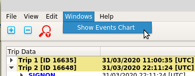
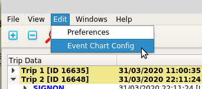
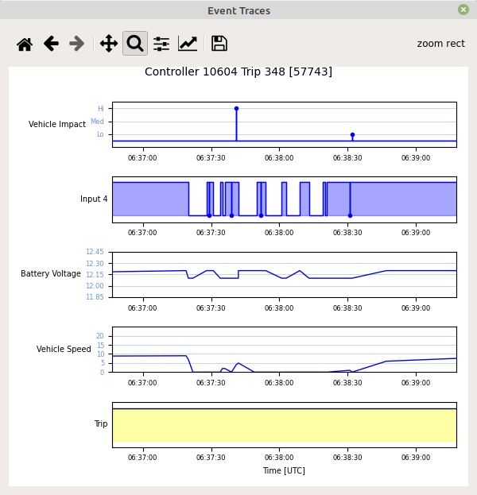

The event traces chart is a non-modal dialog that can be lanuched as an alternate view of trip data in the Trip Data pane.
The event traces chart dialog can be lanuched by selecting the "Windows / Show events chart" menu item. Note that the menu item is not available until a log file has been loaded.
The event traces chart displays the currently configured event traces for the currently selected trip. The chart always includes a trip trace which bounds the extents of the chart to between the SIGNON and TRIP event trimes. The title of the chart includes the controller ID and the trip number and ID.
The event traces chart can be opened and closed as required and will always reflect data for the currently selected trip. Note that if a log file is loaded that does not include any trips the chart will still be displayed but will not include any data.
As with the speed plot on the main application window, the event traces chart use the Python https://matplotlib.org/ library. The standard matplotlib toolbar is displayed at the top of the chart, and can be used to perform standard functions, such as panning or zooming individual event traces, or to save an image of the whole chart.
The colours and fonts used in the chart can be set in the application configuration.
The event traces to be included in the chart are held in application configuration, and can be configured from within the application by selecting the "Edit / Event Chart Config" menu item.
Selecting the "Edit / Event chart config" menu item will launch a dialog where the events included in the event traces chart can be changed and saved.
The Events Charts Configuration dialog allows up to 8 event traces to be plotted at once. Note that the trip trace is an additional trace that is always included.
For each of the 8 chart events the user can select an event from the available events in a drop-down list.
The first entry in the drop-down list is blank and can be used to clear that event trace. Note that blank event traces are ignored and will not be plotted on the Events chart.
The second entry in the drop-down list is "Vehicle Speed" and can used for a plot of the vehicle speed. Note that vehicle speed is not a specific event, but current speed taken from the header of other events (as for the speed plot). The same applies for the third entry in the drop-down list, i.e. "Battery Voltage" which displays the battery voltage included in the header of other events.
The "Title" field is shown on the Events as a y axis label. By default the Title field is the same as the event name, but can be edited by the user (with some exceptions, namely the INPUT event and the Vehicle Speed and Battery Voltage event selections).
If the "INPUT" event is chosen the Title field is fixed and reflects the input number selected. The user can select the input number by using the "Channel" spin control.
All event traces use the same time axis values, i.e. they reflect the period of the trip (plus a bit either end). Note that the cursor location in event trace chart coordinates is reflected in the numbers in the top right corner of the chart.
In general event traces reflect when an event was active. For events that by defintion have a zero duration the event will appear as a vertical line. For events that include a duration the time the event was active will be shown, noting that the start time is worked out from the event time (end) and the duration of the event.
There are a few exceptions to how events are traced, namely INPUT, IMPACT, UNBUCKLED, Vehicle Speed, and Battery Voltage traces as illustrated below. Note that strictly speaking the "Vehicle Speed" and "Battery Voltage" traces are not actual events.
For INPUT events if there is a zero duration transition a round marker is added to the trace vertical line (which will be coincident with the next or previous transition if there is one). Note that the marker is added to the top or bottom of the trace depending on whether the transition was to the active or inactive state.
For IMPACT events the trace is always a vertical line with a round marker at the top at the time of the impact. To give some extra information the severity of the impact is reflected in the height of the trace line, i.e. in 3 levels that relate to minor, warning, and critical impact severities.
For UNBUCKLED events there are 2 traces on the one chart. There is one trace for Operator Unbuckled and one trace for Passenger Unbuckled events. The one chart is used for both as they both share the same UNBUCKLED event.
For the Vehicle Speed and Battery Voltage traces the current vehicle speed taken from REPORT events and from the header of most other events is displayed. In the case of Vehicle Speed, this is the same data as displayed on the speed plot in the main application window.
Using the Matplotlip toolbar any trace can be panned or zoomed, and all other traces will be panned or zoomed to match, that is, the time (x) axis for all traces will be kept in line as illustrated below.
In the illustration above note that in the Matplotlib toolbar that the "Zoom" control is active. Note also that the "Back Arrow" is highlighted indicating that there are one or more previous views to return to. These controls can be used to return to the previous or intital plot.